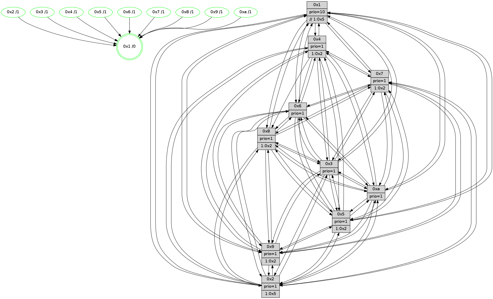

>> << IDX [start] -100 -25 -5 +0 +5 +25 +100 [1215.00840211]
 Previous packets
----------------------------------------------------------------------
1210.209632 beacon01(faad) #0 coord=01,02,03,04,05,06,07,0a,09,08 cycle=688.0ms assoc
-- color-indic=1 64 76 e3
1210.219614 beacon02(faad) #0 coord=01,02,03,04,05,06,07,0a,09,08 cycle=688.0ms assoc 64 e5 d2
1210.229615 beacon03(faad) #0 coord=01,02,03,04,05,06,07,0a,09,08 cycle=688.0ms assoc 64 9f 9f
1210.239616 beacon04(faad) #0 coord=01,02,03,04,05,06,07,0a,09,08 cycle=688.0ms assoc 64 e8 75
1210.249614 beacon05(faad) #0 coord=01,02,03,04,05,06,07,0a,09,08 cycle=688.0ms assoc 64 92 38
1210.259616 beacon06(faad) #0 coord=01,02,03,04,05,06,07,0a,09,08 cycle=688.0ms assoc 64 1c ef
1210.269615 beacon07(faad) #0 coord=01,02,03,04,05,06,07,0a,09,08 cycle=688.0ms assoc 64 66 a2
1210.279620 beacon0a(faad) #0 coord=01,02,03,04,05,06,07,0a,09,08 cycle=688.0ms assoc 64 17 a9
1210.289621 beacon09(faad) #0 coord=01,02,03,04,05,06,07,0a,09,08 cycle=688.0ms assoc 64 99 7e
1210.299620 beacon08(faad) #0 coord=01,02,03,04,05,06,07,0a,09,08 cycle=688.0ms assoc 64 e3 33
1210.312131 [Hello(10): seq=705 sym=6,2,3,8,7,5,9,4,1 sysInfo=hasWarning stat=6:8,13,1,1/2:11,8,4,10/3:14,9,9,11/8:12,0,15,2/7:0,2,7,6/5:12,0,0,15/9:9,6,9,3/4:4,0,7,0/1:0,2,15,1]
1210.320246 [Color(9) seq=345 @0:0 prio=1 >1.@2,1.@5,1.@6,1.@7]
1210.322165 [Color(1) seq=453 @0:0 prio=10 >>1.@2,1.@3,1.@4]
1210.325998 [Hello(7): seq=772 sym=2,3,5,6,4,8,9,10,1 sysInfo=hasWarning stat=2:2,8,14,1/3:8,1,0,0/5:9,12,12,2/6:7,5,13,9/4:13,15,10,1/8:0,1,0,0/9:2,2,1,0/10:0,4,0,6/1:2,6,4,0]
1210.332490 [Color(7) seq=318 @0:0 prio=1 >1.@2,1.@5,1.@6,1.@9]
1210.335034 [Color(4) seq=329 @0:0 prio=1 >1.@2,1.@5,1.@6,1.@7]
1210.338571 [Color(8) seq=371 @0:0 prio=1 >1.@2,1.@5,1.@6,1.@7]
----------------------------------------------------------------------
1210.997762 beacon01(faad) #0 coord=01,02,03,04,05,06,07,0a,09,08 cycle=688.0ms assoc
-- color-indic=1 64 b2 ed
1211.007746 beacon02(faad) #0 coord=01,02,03,04,05,06,07,0a,09,08 cycle=688.0ms assoc 64 21 dc
1211.017744 beacon03(faad) #0 coord=01,02,03,04,05,06,07,0a,09,08 cycle=688.0ms assoc 64 5b 91
1211.027746 beacon04(faad) #0 coord=01,02,03,04,05,06,07,0a,09,08 cycle=688.0ms assoc 64 2c 7b
1211.037747 beacon05(faad) #0 coord=01,02,03,04,05,06,07,0a,09,08 cycle=688.0ms assoc 64 56 36
1211.047745 beacon06(faad) #0 coord=01,02,03,04,05,06,07,0a,09,08 cycle=688.0ms assoc 64 d8 e1
1211.057747 beacon07(faad) #0 coord=01,02,03,04,05,06,07,0a,09,08 cycle=688.0ms assoc 64 a2 ac
1211.067750 beacon0a(faad) #0 coord=01,02,03,04,05,06,07,0a,09,08 cycle=688.0ms assoc 64 d3 a7
1211.077751 beacon09(faad) #0 coord=01,02,03,04,05,06,07,0a,09,08 cycle=688.0ms assoc 64 5d 70
1211.087752 beacon08(faad) #0 coord=01,02,03,04,05,06,07,0a,09,08 cycle=688.0ms assoc 64 27 3d
1211.098954 [Hello(1): seq=682 sym=4,2,9,5,10,3,6,7 sysInfo=coloring-mode-on,ColoringModeRequestCalled stat=4:5,8,1,0/2:10,14,8,2/9:6,9,2,0/5:0,8,1,7/10:11,8,14,7/3:15,3,4,7/6:9,2,11,14/7:14,1,4,14]
1211.102875 [Color(10) seq=362 @0:0 prio=1]
1211.104231 [Hello(5): seq=773 sym=7,6,4,3,1,9,8,10,2 sysInfo=hasWarning stat=7:7,5,12,13/6:7,15,10,2/4:7,13,4,13/3:11,9,4,14/1:8,12,5,0/9:8,8,3,9/8:3,7,1,2/10:0,2,2,8/2:6,13,6,6]
1211.107203 [Hello(2): seq=769 sym=4,5,7,6,3,9,8,10,1 sysInfo=hasWarning stat=4:12,1,11,11/5:9,13,15,1/7:4,13,12,14/6:1,3,0,0/3:7,8,13,9/9:12,2,4,8/8:10,14,11,11/10:14,15,4,10/1:1,14,0,0]
1211.110467 [Hello(6): seq=773 sym=2,3,5,4,7,9,8,10,1 sysInfo=hasWarning stat=2:2,5,1,0/3:4,4,1,12/5:10,6,4,2/4:10,5,0,5/7:3,15,11,12/9:9,7,9,9/8:4,4,5,5/10:13,12,6,12/1:1,12,5,1]
1211.113052 [Color(2) seq=349 @0:0 prio=1 >1.@5,1.@6,1.@7,1.@8]
1211.115221 [Color(6) seq=405 @0:0 prio=1]
1211.123756 [Hello(3): seq=773 sym=1,7,6,2,4,8,9,10,5 sysInfo=hasWarning stat=1:13,14,3,0/7:5,0,2,12/6:2,5,0,0/2:13,5,5,0/4:7,12,5,11/8:14,12,0,4/9:7,0,8,15/10:7,14,15,4/5:9,4,13,0]
1211.128478 [Color(3) seq=402 @0:0 prio=1]
----------------------------------------------------------------------
1211.785894 beacon01(faad) #0 coord=01,02,03,04,05,06,07,0a,09,08 cycle=688.0ms assoc
-- color-indic=1 64 0e e8
1211.795877 beacon02(faad) #0 coord=01,02,03,04,05,06,07,0a,09,08 cycle=688.0ms assoc 64 9d d9
1211.805876 beacon03(faad) #0 coord=01,02,03,04,05,06,07,0a,09,08 cycle=688.0ms assoc 64 e7 94
1211.815877 beacon04(faad) #0 coord=01,02,03,04,05,06,07,0a,09,08 cycle=688.0ms assoc 64 90 7e
1211.825878 beacon05(faad) #0 coord=01,02,03,04,05,06,07,0a,09,08 cycle=688.0ms assoc 64 ea 33
1211.835877 beacon06(faad) #0 coord=01,02,03,04,05,06,07,0a,09,08 cycle=688.0ms assoc 64 64 e4
1211.845877 beacon07(faad) #0 coord=01,02,03,04,05,06,07,0a,09,08 cycle=688.0ms assoc 64 1e a9
1211.855884 beacon0a(faad) #0 coord=01,02,03,04,05,06,07,0a,09,08 cycle=688.0ms assoc 64 6f a2
1211.865882 beacon09(faad) #0 coord=01,02,03,04,05,06,07,0a,09,08 cycle=688.0ms assoc 64 e1 75
1211.875885 beacon08(faad) #0 coord=01,02,03,04,05,06,07,0a,09,08 cycle=688.0ms assoc 64 9b 38
1211.887996 [Hello(10): seq=706 sym=6,2,3,8,7,5,9,4,1 sysInfo=hasWarning stat=6:9,14,1,1/2:12,8,4,10/3:15,10,9,11/8:13,1,15,2/7:1,3,7,6/5:13,1,0,15/9:9,7,9,3/4:4,1,7,0/1:1,3,0,1]
1211.890716 [Color(1) seq=454 @0:0 prio=10 >>1.@2,1.@3,1.@4]
1211.892276 [Hello(7): seq=773 sym=2,3,5,6,4,8,9,10,1 sysInfo=hasWarning stat=2:3,9,14,1/3:9,2,0,0/5:10,12,12,2/6:8,6,13,9/4:13,0,10,1/8:0,2,0,0/9:2,2,1,0/10:1,5,0,6/1:3,6,4,0]
1211.895106 [Color(7) seq=319 @0:0 prio=1 >1.@2,1.@5,1.@6,1.@9]
1211.896855 [STC(10)->1 #0.192 tree-change,inconsistent-stability,stable,to-color d=1]
1211.899941 [Color(5) seq=349 @0:0 prio=1 >1.@2,1.@6,1.@7,1.@8]
1211.901646 [Hello(4): seq=773 sym=5,7,6,2,3,9,8,10,1 sysInfo= stat=5:11,8,3,0/7:5,10,7,1/6:12,14,7,12/2:1,2,14,14/3:11,11,8,12/9:10,9,11,11/8:0,2,0,0/10:13,4,15,14/1:10,12,6,1]
1211.904466 [Hello(8): seq=717 sym=5,2,3,7,9,6,4,10,1 sysInfo=hasWarning stat=5:3,3,8,0/2:13,15,5,10/3:6,5,10,0/7:3,5,0,0/9:10,2,10,3/6:4,1,8,13/4:1,4,0,0/10:14,8,13,4/1:0,7,5,0]
1211.908134 [Color(4) seq=330 @0:0 prio=1 >1.@2,1.@5,1.@6,1.@7]
1211.909757 [Hello(9): seq=717 sym=2,5,3,4,7,6,8,10,1 sysInfo=hasWarning stat=2:5,4,1,8/5:13,13,3,6/3:5,13,8,0/4:6,11,2,0/7:10,3,6,1/6:1,10,15,11/8:6,4,3,3/10:10,4,7,4/1:14,0,8,1]
1211.912523 [Color(8) seq=372 @0:0 prio=1 >1.@2,1.@5,1.@6,1.@7]
1211.914510 [Color(9) seq=346 @0:0 prio=1 >1.@2,1.@5,1.@6,1.@7]
----------------------------------------------------------------------
1212.574024 beacon01(faad) #0 coord=01,02,03,04,05,06,07,0a,09,08 cycle=688.0ms assoc
-- color-indic=1 64 3a f0
1212.584007 beacon02(faad) #0 coord=01,02,03,04,05,06,07,0a,09,08 cycle=688.0ms assoc 64 a9 c1
1212.594006 beacon03(faad) #0 coord=01,02,03,04,05,06,07,0a,09,08 cycle=688.0ms assoc 64 d3 8c
1212.604007 beacon04(faad) #0 coord=01,02,03,04,05,06,07,0a,09,08 cycle=688.0ms assoc 64 a4 66
1212.614009 beacon05(faad) #0 coord=01,02,03,04,05,06,07,0a,09,08 cycle=688.0ms assoc 64 de 2b
1212.624008 beacon06(faad) #0 coord=01,02,03,04,05,06,07,0a,09,08 cycle=688.0ms assoc 64 50 fc
1212.634008 beacon07(faad) #0 coord=01,02,03,04,05,06,07,0a,09,08 cycle=688.0ms assoc 64 2a b1
1212.644013 beacon0a(faad) #0 coord=01,02,03,04,05,06,07,0a,09,08 cycle=688.0ms assoc 64 5b ba
1212.654012 beacon09(faad) #0 coord=01,02,03,04,05,06,07,0a,09,08 cycle=688.0ms assoc 64 d5 6d
1212.664012 beacon08(faad) #0 coord=01,02,03,04,05,06,07,0a,09,08 cycle=688.0ms assoc 64 af 20
1212.675527 [Hello(5): seq=774 sym=7,6,4,3,1,9,8,10,2 sysInfo=hasWarning stat=7:7,5,12,13/6:8,0,10,2/4:8,14,4,13/3:12,10,4,14/1:8,12,5,0/9:9,9,3,9/8:4,8,1,2/10:1,2,2,8/2:7,14,6,6]
1212.679463 [Hello(3): seq=774 sym=1,7,6,2,4,8,9,10,5 sysInfo=hasWarning stat=1:14,15,3,0/7:6,1,2,12/6:2,5,0,0/2:13,5,5,0/4:8,13,5,11/8:15,13,0,4/9:8,1,8,15/10:8,14,0,4/5:9,5,13,0]
1212.683891 [Color(3) seq=403 @0:0 prio=1]
1212.685493 [Color(10) seq=363 @0:0 prio=1]
1212.686944 [Hello(2): seq=770 sym=4,5,7,6,3,9,8,10,1 sysInfo=hasWarning stat=4:13,2,11,11/5:9,14,15,1/7:5,14,12,14/6:1,4,0,0/3:8,9,13,9/9:13,3,4,8/8:11,15,11,11/10:15,15,5,10/1:2,15,0,0]
1212.691045 [Color(2) seq=350 @0:0 prio=1 >1.@5,1.@6,1.@7,1.@8]
1212.693716 [Hello(1): seq=683 sym=4,2,9,5,10,3,8,6,7 sysInfo=coloring-mode-on,ColoringModeRequestCalled stat=4:6,9,1,0/2:10,14,8,2/9:7,10,2,0/5:0,9,1,7/10:12,8,15,7/3:0,4,4,7/8:0,1,0,0/6:9,3,11,14/7:15,2,4,14]
1212.696667 [Hello(6): seq=774 sym=2,3,5,4,7,9,8,10,1 sysInfo=hasWarning stat=2:2,5,1,0/3:5,5,1,12/5:10,7,4,2/4:11,6,0,5/7:4,0,11,12/9:10,8,9,9/8:5,5,5,5/10:14,12,7,12/1:2,13,5,1]
1212.700146 [Color(6) seq=406 @0:0 prio=1]
----------------------------------------------------------------------
1213.362155 beacon01(faad) #0 coord=01,02,03,04,05,06,07,0a,09,08 cycle=688.0ms assoc
-- color-indic=1 64 86 f5
1213.372137 beacon02(faad) #0 coord=01,02,03,04,05,06,07,0a,09,08 cycle=688.0ms assoc 64 15 c4
1213.382137 beacon03(faad) #0 coord=01,02,03,04,05,06,07,0a,09,08 cycle=688.0ms assoc 64 6f 89
1213.392138 beacon04(faad) #0 coord=01,02,03,04,05,06,07,0a,09,08 cycle=688.0ms assoc 64 18 63
1213.402138 beacon05(faad) #0 coord=01,02,03,04,05,06,07,0a,09,08 cycle=688.0ms assoc 64 62 2e
1213.412138 beacon06(faad) #0 coord=01,02,03,04,05,06,07,0a,09,08 cycle=688.0ms assoc 64 ec f9
1213.422140 beacon07(faad) #0 coord=01,02,03,04,05,06,07,0a,09,08 cycle=688.0ms assoc 64 96 b4
1213.432144 beacon0a(faad) #0 coord=01,02,03,04,05,06,07,0a,09,08 cycle=688.0ms assoc 64 e7 bf
1213.442142 beacon09(faad) #0 coord=01,02,03,04,05,06,07,0a,09,08 cycle=688.0ms assoc 64 69 68
1213.452143 beacon08(faad) #0 coord=01,02,03,04,05,06,07,0a,09,08 cycle=688.0ms assoc 64 13 25
1213.463357 [Hello(10): seq=707 sym=6,2,3,8,7,5,9,4,1 sysInfo=hasWarning stat=6:10,15,1,1/2:13,9,4,10/3:15,10,9,11/8:14,2,15,2/7:1,3,7,6/5:14,2,0,15/9:10,8,9,3/4:5,2,7,0/1:2,3,0,1]
1213.466889 [Color(5) seq=350 @0:0 prio=1 >1.@2,1.@6,1.@7,1.@8]
1213.468766 [Color(1) seq=455 @0:0 prio=10 >>1.@5,1.@6,1.@7]
1213.470991 [Hello(7): seq=774 sym=2,3,5,6,4,8,9,10,1 sysInfo=hasWarning stat=2:4,10,14,1/3:10,3,0,0/5:11,13,12,2/6:9,7,13,9/4:14,1,10,1/8:1,3,0,0/9:3,3,1,0/10:2,6,1,6/1:4,6,4,0]
1213.473765 [Hello(8): seq=718 sym=5,2,3,7,9,6,10,1 sysInfo=hasWarning stat=5:4,3,8,0/2:14,0,5,10/3:7,6,10,0/7:3,5,0,0/9:10,3,10,3/6:5,2,8,13/10:15,9,13,4/1:1,7,5,0]
1213.476278 [Hello(4): seq=774 sym=5,7,6,2,3,9,8,10,1 sysInfo= stat=5:12,8,3,0/7:5,10,7,1/6:13,15,7,12/2:2,3,14,14/3:12,12,8,12/9:11,10,11,11/8:0,3,0,0/10:14,5,15,14/1:11,12,6,1]
1213.479411 [Color(4) seq=331 @0:0 prio=1 >1.@2,1.@5,1.@6,1.@7]
1213.481085 [Color(8) seq=373 @0:0 prio=1 >1.@2,1.@5,1.@6,1.@7]
1213.483033 [Hello(9): seq=718 sym=2,5,3,4,7,6,8,10,1 sysInfo=hasWarning stat=2:6,5,1,8/5:14,13,3,6/3:6,14,8,0/4:6,11,2,0/7:10,3,6,1/6:2,11,15,11/8:6,4,3,3/10:11,5,7,4/1:15,0,8,1]
1213.487767 [Color(9) seq=347 @0:0 prio=1 >1.@2,1.@5,1.@6,1.@7]
1213.494508 [Color(7) seq=320 @0:0 prio=1 >1.@2,1.@5,1.@6,1.@9]
----------------------------------------------------------------------
1214.150285 beacon01(faad) #0 coord=01,02,03,04,05,06,07,0a,09,08 cycle=688.0ms assoc
-- color-indic=1 64 42 fb
1214.160267 beacon02(faad) #0 coord=01,02,03,04,05,06,07,0a,09,08 cycle=688.0ms assoc 64 d1 ca
1214.170267 beacon03(faad) #0 coord=01,02,03,04,05,06,07,0a,09,08 cycle=688.0ms assoc 64 ab 87
1214.180268 beacon04(faad) #0 coord=01,02,03,04,05,06,07,0a,09,08 cycle=688.0ms assoc 64 dc 6d
1214.190268 beacon05(faad) #0 coord=01,02,03,04,05,06,07,0a,09,08 cycle=688.0ms assoc 64 a6 20
1214.200267 beacon06(faad) #0 coord=01,02,03,04,05,06,07,0a,09,08 cycle=688.0ms assoc 64 28 f7
1214.210268 beacon07(faad) #0 coord=01,02,03,04,05,06,07,0a,09,08 cycle=688.0ms assoc 64 52 ba
1214.220274 beacon0a(faad) #0 coord=01,02,03,04,05,06,07,0a,09,08 cycle=688.0ms assoc 64 23 b1
1214.230273 beacon09(faad) #0 coord=01,02,03,04,05,06,07,0a,09,08 cycle=688.0ms assoc 64 ad 66
1214.240272 beacon08(faad) #0 coord=01,02,03,04,05,06,07,0a,09,08 cycle=688.0ms assoc 64 d7 2b
1214.251523 [Hello(1): seq=684 sym=4,2,9,5,10,3,8,6,7 sysInfo=coloring-mode-on,ColoringModeRequestCalled stat=4:7,10,1,0/2:10,14,8,2/9:8,11,2,0/5:0,9,1,7/10:13,8,15,7/3:0,4,4,7/8:1,2,0,0/6:10,4,11,14/7:0,3,4,14]
1214.255788 [Hello(5): seq=775 sym=7,6,4,3,1,9,8,10,2 sysInfo=hasWarning stat=7:8,6,12,13/6:9,1,10,2/4:9,15,4,13/3:13,11,4,14/1:9,13,5,0/9:10,10,3,9/8:5,9,1,2/10:2,3,2,8/2:8,15,6,6]
1214.259675 [Color(10) seq=364 @0:0 prio=1]
1214.261015 [Hello(3): seq=775 sym=1,7,6,2,4,8,9,10,5 sysInfo=hasWarning stat=1:15,0,3,0/7:7,2,2,12/6:3,6,0,0/2:14,6,5,0/4:9,14,5,11/8:0,14,0,4/9:9,2,8,15/10:9,15,0,4/5:10,6,13,0]
1214.264002 [Hello(6): seq=775 sym=2,3,5,4,7,9,8,10,1 sysInfo=hasWarning stat=2:2,5,1,0/3:5,5,1,12/5:11,8,4,2/4:12,7,0,5/7:5,1,11,12/9:11,9,9,9/8:6,6,5,5/10:15,12,7,12/1:2,14,5,1]
1214.268431 [Color(3) seq=404 @0:0 prio=1]
1214.270602 [Hello(2): seq=771 sym=4,5,7,6,3,9,8,10,1 sysInfo=hasWarning stat=4:14,3,11,11/5:10,15,15,1/7:6,15,12,14/6:2,5,0,0/3:8,9,13,9/9:14,4,4,8/8:12,0,11,11/10:0,15,5,10/1:3,0,0,0]
1214.275353 [Color(2) seq=351 @0:0 prio=1 >1.@5,1.@6,1.@7,1.@8]
----------------------------------------------------------------------
1214.938416 beacon01(faad) #0 coord=01,02,03,04,05,06,07,0a,09,08 cycle=688.0ms assoc
-- color-indic=1 64 fe fe
1214.948398 beacon02(faad) #0 coord=01,02,03,04,05,06,07,0a,09,08 cycle=688.0ms assoc 64 6d cf
1214.958398 beacon03(faad) #0 coord=01,02,03,04,05,06,07,0a,09,08 cycle=688.0ms assoc 64 17 82
1214.968399 beacon04(faad) #0 coord=01,02,03,04,05,06,07,0a,09,08 cycle=688.0ms assoc 64 60 68
1214.978399 beacon05(faad) #0 coord=01,02,03,04,05,06,07,0a,09,08 cycle=688.0ms assoc 64 1a 25
1214.988398 beacon06(faad) #0 coord=01,02,03,04,05,06,07,0a,09,08 cycle=688.0ms assoc 64 94 f2
1214.998398 beacon07(faad) #0 coord=01,02,03,04,05,06,07,0a,09,08 cycle=688.0ms assoc 64 ee bf